UDN
Search public documentation:
StatsDescriptionsCH
English Translation
日本語訳
한국어
Interested in the Unreal Engine?
Visit the Unreal Technology site.
Looking for jobs and company info?
Check out the Epic games site.
Questions about support via UDN?
Contact the UDN Staff
日本語訳
한국어
Interested in the Unreal Engine?
Visit the Unreal Technology site.
Looking for jobs and company info?
Check out the Epic games site.
Questions about support via UDN?
Contact the UDN Staff
统计数据命令描述
- 统计数据命令描述
- 概述
- 执行命令
- 在编辑器统计查看统计数据
- 统计数据类型
- Standalone Stats(独立平台统计数据)
- Stat Groups
- STAT ANIM
- STAT ASYNCIO
- STAT AUDIO
- STAT BEAMPARTICLES
- STAT CANVAS
- STAT COLLISION
- STAT CROWD
- STAT D3D11RHI
- STAT D3D9RHI
- STAT DECALS
- STAT DLE
- STAT ENGINE
- STAT FACEFX
- STAT FLUIDS
- STAT GAME
- STAT GFX
- STAT INITVIEWS
- STAT INSTANCING
- STAT MEMORY
- STAT XBOXMEMORY
- STAT MEMORYCHURN
- STAT MEMORYSTATICMESH
- STAT MESHPARTICLES
- STAT MORPH
- STAT NAVMESH
- STAT NET
- STAT OBJECT
- STAT OCTREE
- STAT PARTICLEMEM
- STAT PARTICLES
- STAT PATHFINDING
- STAT PEER
- STAT PHYSICS
- STAT PHYSICSCLOTH
- STAT PHYSICSFIELDS
- STAT PHYSICSFLUID
- STAT SCENERENDERING
- STAT SCENEUPDATE
- STAT SHADERCOMPILING
- STAT SHADERCOMPRESSION
- STAT SHADOWRENDERING
- STAT STATSYSTEM
- STAT STREAMING
- STAT STREAMINGDETAILS
- STAT TEXTUREPOOL
- STAT THREADING
- STAT TRAILPARTICLES
- 统计数据选项
概述
当调试、测试或分析游戏时，能够快速并容易地直接在游戏中查看及分析有意义的数据是非常必要的。通过使用STAT 控制台命令，虚幻引擎3提供了用于查看关于游戏和引擎各个方面的大量统计数据的功能，并将它们作为平头显示信息(HUD)显示到屏幕上。 STAT 命令取入一个参数，该参数决定了在屏幕上显示哪组统计数据。本文档包含了引擎支持的各种统计命令。
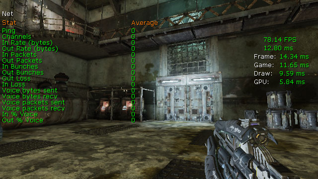
执行命令
STAT 命令的执行方式和其他任何控制台命令类似。可以直接将它们输入到游戏中的控制台界面中或者通过使用了 Console Command(控制台命令)的Kismet来执行。
STAT 命令的语法是：
stat <command>
在编辑器统计查看统计数据
可以直接在虚幻编辑器的视口中查看统计数据。要想在编辑器视口中查看统计数据，首先必须在Viewport Toolbar(视口工具条）的下拉菜单 Viewport Options(视口选项)中启用Show Stats(显示统计数据)选项。 除了启用启用Show Stats 选项外，视口必须还要启用Realtime Update(实时更新)功能。一旦将这些选项启用后，可以在编辑器状态栏的控制台条中输入 STAT 命令，其语法和在游戏控制台中输入该命令一样(如上所示)。
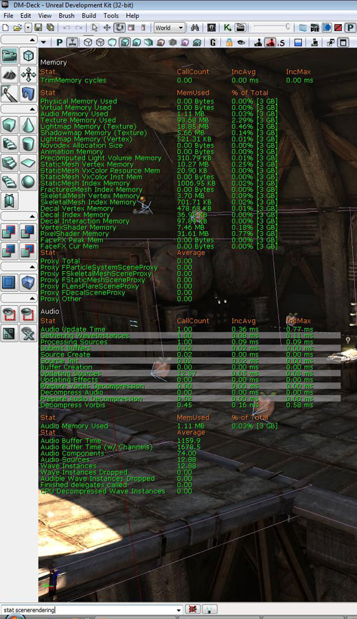
统计数据类型
有几种可以用于跟踪信息的统计数据类型，并且可以显示这些数据。每种类型的统计数据以它们各自不同的方式来展现它们所存放的数据。以下进行了解释。Cycle Counter Stat（循环计数器统计数据）
Cycle Counter(循环计数器)统计数据跟踪执行某个任务所花费的时间。这种类型的统计数据显示为三列：- CallCount - 所跟踪的任务被执行的次数。
- IncAvg - 执行该任务所用的平均时间。
- IncMax - 执行该任务所用的最大时间。
Memory Counter Stat(内存计数器统计数据)
Memory Counter(内存计数器)统计数据跟踪内存应用情况，并对内存应用进行特殊处理。 这种类型的统计数据显示为三列：- MemUsedAvg - 这方面处理所占用的平均内存。
- MemUsedMax - 这方面处理所占用的最大内存。
- % of Total - 这方面处理所占用的内存占总内存的百分比。
Accumulator Stat(累加器统计数据)
Accumulator Stat(累加器统计数据)使一些可一进行渐增或渐减计算的一些简单的值，这些值不跟踪历史记录，并且每帧不会清除这些值。这种类型的统计数据显示单独一列的数据：- Average - 统计数据的值。
Counter Stat(计数器统计数据)
Accumulator Stat(累加器统计数据)使一些可一进行渐增或渐减计算的一些简单的值，这些值可以跟踪历史记录，并且每帧会清除这些值。这种类型的统计数据显示单独一列的数据：- Average - 统计数据的值。
Standalone Stats(独立平台统计数据)
这些STAT 命令显示独立平台统计数据。
STAT FPS
STAT FPS 命令显示每秒钟当前正在渲染的帧数及渲染该帧所用的时间(以微秒为单位)。
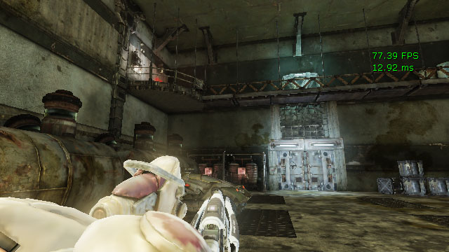
FPS 颜色编码
fps统计数据根据值的不同使用以下三种颜色之一进行描画。颜色是：- 绿色 - 值>= 29.5. FPS在可接受范围内。
- 黄色 - 20.0 < 值< 29.5. FPS接近了有问题的范围，并且应该进行监控。
- 红色 - 值< 20.0. FPS非常低，需要注意。
STAT LEVELS
STAT LEVELS 命令显示了当前活动的关卡列表，并通过不同的颜色显示了它们的状态。 动态载入关卡被分组在永久性关卡下。 关卡名称下面的秒数是该关卡从加载请求到加载完成所花费的时间。
关卡 颜色编码
- 红色 -关卡已加载并且可见。
- 橘黄色 -正在使关卡可见的过程中。
- 黄色 -关卡已加载但不可见。
- 蓝色 -关卡没有被加载，但是处在内存中，当发生垃圾回收时，它将会被清除。
- 绿色 -关卡没有被加载。
- 紫色 - 正在预加载关卡。
STAT UNIT
STAT UNIT 命令显示了CPU上为当前帧花费的时间、在游戏线程中花费的时间、在渲染线程中花费的时间及GPU上为当前帧花费的时间。
注意: 仅当GPU帧时间的值大于0时才会显示该值。

Unit （单元）颜色编码
unit统计数据根据值的不同使用以下三种颜色之一进行描画。颜色是：- 绿色 - 值<34.0。FPS在可接受范围内。
- 黄色 - 34.0 < 值< 50.0. 这个值正在接近有问题的范围，并且应该进行监控。
- 红色 - 值> 50.0。这个值非常高，需要注意。
STAT UNITGRAPH
STAT UNITGRAPH 命令显示了游戏中帧的时间图，由实时滚动的图表构成，当您测试游戏时会滚动着显示帧时间数据。
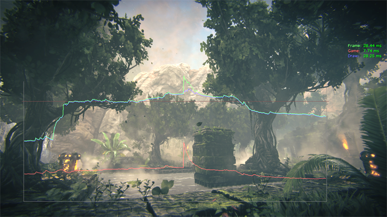
这是快速获得游戏当前性能大致情况的最好的工具，可以帮助您轻松地查看游戏中的某些部分是否受到游戏线程、渲染线程或GPU性能的限制。 垂直轴是 frame time(帧时间) ，水平轴是 frame number(帧数量) 。 在 30 FPS 标记处还有一个水平的 alert line（警告线） 。 图标上任何在该警告线上面的较慢的样本将会 闪动 ，从而吸引您的注意力！ 该线的颜色和屏幕右上角显示的STAT UNIT 时间的标签相匹配。
- 绿色 - Frame time（帧时间）
- 红色 - 游戏线程
- 蓝色 - 渲染线程
- 红色 - GPU时间
STAT UNIT 时间类似)。 也就是，这些时间是每隔10帧的滚动平均数。 如果您想查看 没过滤的数据 ，那么您可以输入 STAT RAW 来直接对查看帧时间的图表。 未经过过滤的帧时间有它的用途，但是一般来讲当运行游戏边进行分析时很难可视化地查看出当前的进展情况。
Stat Groups
这些STAT 命令显示成组的的相关统计数据。多个统计数据命令可以在彼此基础上执行来同时显示多组统计数据。
STAT ANIM
STAT ANIM 命令显示动画系统的统计数据。

- SkelComp Tick Time - 更新SkeletalMeshComponents (骨架网格物体组件)所花费的时间。
- Anim Tick Time - 更新SkeletalMeshComponents (骨架网格物体组件)的动画/骨架控制所花费的时间。
- Sync Groups - 更新Sync Group(同步组)所需要的时间。
- Tick Skel Controls - 更新SkeletalMeshComponents (骨架网格物体组件)的骨架控制所需要的时间。
- UpdateSkelPose - 更新SkeletalMeshComponents (骨架网格物体组件)姿势所需要的时间(它为骨骼更新了来自输入端的所有变换信息-也就是 动画/骨架 控制)。
- Get Bone Atoms - 从动画中 提取/混合 所有骨骼变换所需要的时间。
- Mirror BoneAtoms - 把源骨骼镜像到目标骨骼所需要的时间。
- Anim Decompression - 从压缩数据或原数据进行解压缩后获得动画姿势所需要的时间。
- UpdateFaceFX - 更新FaceFX所需的时间。
- Compose Skeleton - 通过层次化地增加父项的变化来把Local Space(本地空间)骨骼变换转换为Compose Space(合成空间)骨骼变换所需要的时间。
- SkelControl - 计算所有活动的Skeletal Controls(骨骼控制)的骨骼变换所需要的时间。
- Update RBBones - 将动画姿势应用到物理物体上所需要的时间。
- SkelComp UpdateTransform - 更新变换所需的时间。
- BlenInPhysics - 基于权重混合物理和动画所需要的时间。
- MeshObjectUpdate - 更新到皮肤渲染线程的所有变换信息所需要的变换时间。
- Update SkelMesh Bounds - 更新SkeletalMeshComponent边界所需的时间。
- SkelComp UpdateChildComponents - 更新附加的所有子组件所需要的时间。
STAT ASYNCIO
STAT ASYNCIO 显示关于从磁盘中异步加载的数据的统计数据。

- Fulfilled Read Size - 通过成功的请求加载的数据量。
- Canceled Read Size - 在取消的请求中包含的数据量。
- Outstanding Read Size - 在未处理的后续请求中仍然需要加载的数据量。
- Uncompressor Wait Time - 这帧中解压加载的数据所花费的时间。
- Uncompressor Total Time - 解压数据所花费的总是时间。
- Main Thread Block Time - 等待从一个存档中序列化数据所花费的时间。
- Async Package Precache Wait Time -
- Platform Read Time - 加载数据所花费的时间。
- Fulfilled Read Count - 导致成功加载数据的请求次数。
- Canceled Read Count - 取消请求的次数。
- Outstanding Read Count - 仍然需要加载的请求的次数。
- Bandwidth (MByte/sec) - 加载数据的速度。
STAT AUDIO
STAT AUDIO 命令显示关于音频系统的统计数据，包括所使用的内存、更新声效所花费的时间、播放声效的次数等。

- Audio Update Time - 更新所有音频东西所需要的总时间(在AudioDevice::Update函数中占用的总时间)。
- Gathering WaveInstances - 收集、存储以及优化所有潜在的音频源。
- Processing Sources - 启动 和/或 更新任何具有较高播放优先级的音频源。
- Submit Buffers - 提交音频缓冲到系统中。
- Source Create - 创建新的声效源。
- Source Init - 初始化所有声效的源。
- Buffer Creation - 声效资源的创建(也就是，把PCM数据上载到OpenAL)。
- Updating Sources - 更新声效资源所需要的时间(位置、速度、音量、音调等)。
- Updating Effects - 应用音频特效所需的时间(混响、LPF、ＥＱ)。
- Prepare Vorbis Decompression - 初始化vorbis流以便解压缩。
- Decompress Audio - 解压缩所有压缩的音频花费的时间(当前，仅vorbis格式)。
- Prepare Audio Decompression - 一般的声效解压缩的初始化(目前，仅vorbis数据)。
- Decompress Vorbis - 解压缩vorbis数据。
- Audio Memory Used - 所有声效资源所使用的内存总量。不包括任何工作区或内部缓存。
- Audio Buffer Time - 存储声效数据所花费的时间(以秒为单位)。
- Audio Buffer Time (w/ Channels) - 存储声效数据通道所花费的时间(以秒为单位)。 多通道声效中的每个通道所花费的时间加到一起获得这个值。
- Audio Components - 在处理过程中要维护的活动声效的数量(所有地图的环境声效、玩家声效等)。
- Audio Sources - 可以听到的和具有足够高的听到优先级的音频组件的数量。
- Wave Instances - 正在处理的所有声效波形。
- Wave Instances Dropped - 没有分配给声效源的声效的数量(因为不能听到它们)。
- Audible Wave Instances Dropped - 没有播放但可以听见的声效的数量。
- Finished Delegates Called - 音频组件停止导致调用
OnAudioFinished代理的总次数。 - CPU Decompressed Wave Instances - 在关卡运行过程中，正在解压一个Vorbis声效的源的数量。
STAT BEAMPARTICLES
STAT BEAMPARTICLES 显示针对包含使用了光束类型模块的发射器的粒子系统的统计数据。
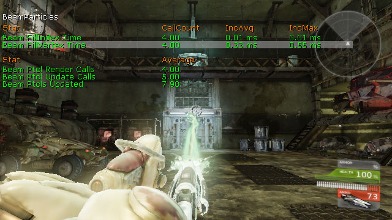
- Beam FillIndex Time - 填充索引数据来渲染光束发射器所花费的时间。
- Beam FillVertex Time - 填充顶点数据来渲染光束发射器所花费的时间。
- Beam Ptcl Render Calls - 那一帧中渲染的光束发射器实例的数量。
- Beam Ptcl Update Calls - 那一帧中的光束发射器实例更新调用函数的数量
- Beam Ptcls Updated - 那一帧中更新的发射器实例的数量。
STAT CANVAS
STAT CANVAS 命令显示针对使用Canvas对象向屏幕上描画元素的相关统计数据。

- Add Material Tile Element - 生成新的画布平铺渲染器项。
- Get Batched Element Time - 创建成批的要描画到屏幕上的元素。
- Draw String Time - 添加要描画到屏幕上的文本字符串。
- Draw Material Tile Time - 添加要描画到到屏幕上的材质平铺块。
- Draw Texture Tile Time - 添加要描画到到屏幕上的贴图平铺块。
- Flush Time - 渲染要描画到屏幕上的分类的项。
- Num Batches Created - 创建的可渲染元素的总批数。
STAT COLLISION
STAT COLLISION 显示针对世界中对象之间碰撞的统计数据。

- BSP Point Check - 针对BSP进行点碰撞检测。
- BSP Extent Check - 针对BSP进行非零粗细碰撞检测。
- BSP Line Check - 针对BSP进行零粗细碰撞检测。
- Check Sort - 多重线性检测的碰撞排列表。
- Check Actors - 通过多重线性检测来检查它和Actors之间的碰撞。
- Checl Level - 通过多重线性检测来检查它和世界几何体(BSP、Landscape等)之间的碰撞。
- Multi Line Check - 检查多重线性检测的所有碰撞。
- Single Line Check - 检查所有单线性检测碰撞。
- SM Point Check - 针对静态网格物体进行点碰撞检测。
- SM Extent Check - 针对静态网格物体进行非零粗细碰撞检测。
- SM Line Check - 针对静态网格物体进行零粗细碰撞检测。
- Terrain Point Check - 针对地形进行点碰撞检测。
- Terrain Extent Check - 针对地形进行非零粗细碰撞检测。
- Terrain Line Check - 针对地形进行零粗细碰撞检测。
STAT CROWD
STAT CROWD 显示针对群体仿真的统计数据。

- Agent Full Tick - 更新群体代理。
- Agent Physics - 更新群体代理物理。
- Pop Manager - 更新群体成员管理器。
- Force Points - 更新群体引力器和排斥器。
- Crowd Total - 更新所有群体元素。
STAT D3D11RHI
STAT D3D11RHI 命令显示基本的DirectX 11渲染统计数据。
注意: DirectX 10硬件通过DirectX 11接口处理。

- Constant Buffer Update Time - 传送常量的缓冲数据给设备。
- CreateBoundShaderState Time - 创建编辑器着色器状态实例，它封装了一个声明、顶点着色器和像素着色器。
- UploadTextureMip Time -
- CopyMipToMipAsunc Time - 在 mip-maps之间进行异步复制。
- CopyTexture Time - 复制贴图或贴图区域。
- UnlockTexture Time - 解锁贴图资源。
- LockTexture Time - 锁定贴图资源。
- CreateTexture Time - 创建新的贴图资源。
- Present Time - 更新视口。
- DrawPrimitive Calls - 图元描画函数调用的总数量。
- Trinagles Drawn - 所渲染的总的三角形数量。
- Lines Drawn - 所渲染的线的总数量。
STAT D3D9RHI
STAT D3D11RHI 命令显示基本的DirectX 9渲染统计数据。

- Present Time - 更新视口。
- DrawPrimitive Calls - 图元描画函数调用的总数量。
- Trinagles Drawn - 所渲染的总的三角形数量。
- Lines Drawn - 所渲染的线的总数量。
STAT DECALS
STAT DECALS 显示针对世界中decals（贴花）的统计数据。
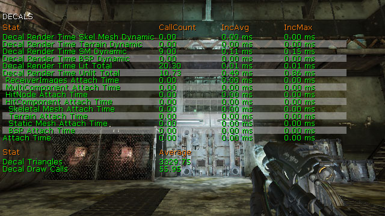
- Decal Render Time Skel Mesh Dynamic - 在骨架网格物体上渲染未进行批处理的decals。 所有的骨架网格物体decals都将在不进行FMeshElement批处理的情况下进行渲染，因为骨架网格物体总是动态的。
- Decal Render Time Terrain Dynamic - 在地形上渲染未批处理的decals。
- Decal Render Time SM Dynamic - 在静态网格物体上渲染未批处理的decals 仅当静态网格物体是移动的或者如果它是半透明的时，静态网格物体接受者的decals才不进行批处理。
- Decal Render Time BSP Dynamic - 在BSP模型上渲染未经过批处理的decals。 仅当BSP模型是半透明相关时，decals才不会进行批处理。
- Decal Render Time Lit Total - 在光照渲染遍数中渲染批处理的和未经过批处理的decals。这包括半透明的和不透明的decals。
- Decal Render Time Unlit Total - 渲染不带光照的经过批处理和未经过批处理的decals。这包括半透明的和不透明的decals。这包括半透明的和不透明的decals。
- ReceiverImages Attatch Time - 把decals附加到一系列指定的接受者图元组件上(不包括BSP)。
- MultiComponent Attatch Time - 在没有指定任何碰撞组件相关信息的情况下，附加decals到所有几何体上。这包括用于查找触及decals边界的场景八叉树遍历所需的时间。
- HitNode Attatch Time - 当指定了 HitNode索引时，附加decals到BSP。 同时请参照BSP Attach时间。
- HitComponent Attatch Time -当指定了HitComponent时，附加decals到BSP上。同时请参照BSP Attach时间。
- Skeletal Mesh Attatch Time - 附加decals到骨架网格物体并生成渲染器数据。
- Terrain Attatch Time - 附加decals到地形、剪裁decal平截头体并产生渲染器数据。
- Static Mesh Attatch Time - 附加decals到静态网格物体、剪裁decal平截头体并生成渲染器数据。 这包括为计算decal平截头体中的三角形索引而进行kDOP遍历。
- BSP Attatch Time - 附加decals到BSP、剪裁decal平截头体并产生渲染器数据
- Attatch Time - 附加decals到所有类型的几何体。
- Decal Triangles - 所有图源类型渲染的decal三角形总数，既包括批处理的decals也包括未批处理的decals。
- Decal Draw Calls - 所有图源类型渲染的decals的描画函数调用总数，既包括批处理的decals也包括未批处理的decals。
STAT DLE
STAT DLE 命令显示关于世界中动态对象上所使用的DynamicLightEnvironments 的统计数据。
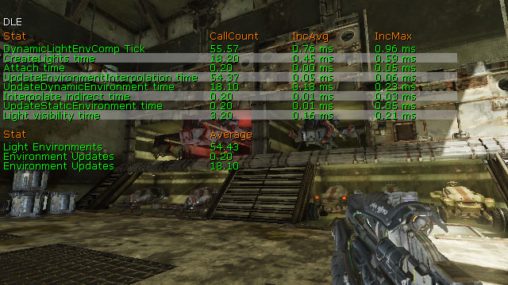
- DynamicLightEnvComp Tick - 在游戏线程中更新动态光照环境。
- Environment Updates - 更新的所有静态环境。
- Environment Updates - 更新的所有动态环境。
- Light Environments - 世界中的所有动态光照环境。
- CreateLights Time - 更新动态光照环境的代表光源。 这个时间是'DynamicLightEnvComp Tick' 和 'Attach time'的子集。
- Attatch Time - 附加动态光照环境所花费的游戏线程时间。动态光照环境一般会在附加时进行全部的更新，所以这里可能出现峰值。 这个stat命令+ DynamicLightEnvComp Tick命令可以从最高的层次上说明游戏线程中所有的动态光照环境消耗问题。
- UpdateEnvironmentInterpolation time - 插值动态光照环境的静态光照信息。这个时间是'DynamicLightEnvComp Tick' 和 'Attach time'的子集。
- UpdateDynamicEnvironment time - 插值动态光照环境的动态环境。 这个时间是'DynamicLightEnvComp Tick' 和 'Attach time'的子集。
- Interpolate indirect time -预计算的间接光照样本进行插值。 这个时间是'DynamicLightEnvComp Tick' 和 'Attach time'的子集。
- UpdateDynamicEnvironment time - 插值动态光照环境的静态环境。 这个时间是'DynamicLightEnvComp Tick' 和 'Attach time'的子集。
- Light Visibility Time - 跟踪光源决定其可见性。 这个时间是'DynamicLightEnvComp Tick' 和 'Attach time'的子集。
STAT ENGINE
STAT ENGINE 命令显示了引擎级别的统计数据，比如三角形数量、描画函数、执行各种系统的更新所花费的时间。
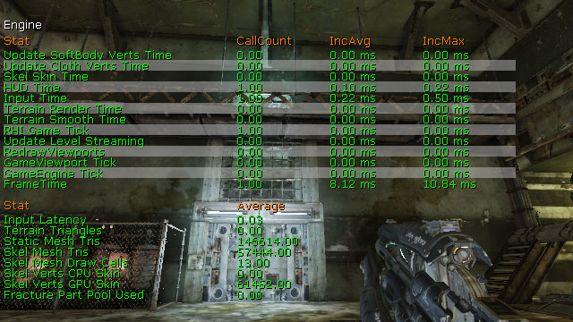
- Update SoftBody Verts Time - 从物理信息中更新软体的图形顶点。
- Update Cloth Verts Time - 从物理信息中更新布料的图形顶点。
- Skel Skin Time - 重新植皮骨架网格物体LOD的缓冲顶点，并更新顶点缓冲。
- HUD Time - 渲染玩家的HUD。
- Input Time - 处理共享输入设备的输入。
- Terrain Render Time - 渲染地形和景观。
- Terrain Smooth Time - 在不同细分级别之间变换地形。
- RHI Game Tick - 更新渲染器的硬件接口。
- Update Level Streaming - 更新世界中的动态载入关卡。
- RedrawViewports - 描画游戏视口。
- GameViewport Tick - 更新游戏视口。
- GameEngine Tick - 更新游戏引擎，也就是更新所有东西。
- FrameTime - 更新每帧。
- Input Latency -
- Terrain Triangles - 地形和景观三角形的总数量。
- Static Mesh Tris - 静态网格物体三角形的总量。
- Skel Mesh Tris - 骨架网格物体三角形的总数量。
- Skel Mesh Draw Calls -骨架网格物体的描画类调用总数。
- Skel Verts CPU Skin - 在CPU上计算其植皮的顶点的总数。
- Skel Verts GPU Skin - 在GPU上计算植皮的顶点的总数。
- Fracture Part Pool Used - 部分池中使用的破裂的静态网格物体部分的总数。
STAT FACEFX
STAT FACEFX 命令显示针对正在播放的FaceFX脸部动画的统计数据。
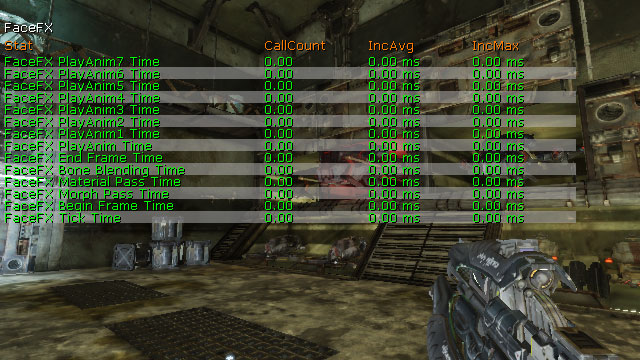
- FaceFx End Frame Time - 完成该帧的FaceFX动画。
- FaceFx Bone Blending Time - 更新骨骼变换。
- FaceFx Material Pass Time - 更新Face Graph中存在的可能的任何材质参数节点。
- FaceFx Morph Pass Time - 更新Face Graph中任何可能的顶点变形节点。
- FaceFx Begin Frame Time - 为该帧初始化FaceFX动画。
- FaceFx Tick Time - 更新所有FaceFX动画。
STAT FLUIDS
STAT FLUIDS 命令显示针对运行流体仿真的对象（尤其是FluidSurfaceActors）的统计数据。

- FluidInfluenceComp Tick - 每帧更新所有流体的影响力。
- FluidSurfaceComp Tick - 每帧中，在游戏线程上更新所有流体表面。
- Fluid Renderthread Blocked - 在每帧中，在渲染线程上更新所有流体表面。这里的大部分时间都是由于等待仿真线程完成所导致的阻塞所消耗的时间。
- Fluid Simulation - 每帧中，更新流体表面heightfield(高区域)。
- Fluid CPU Memory - 为所有流体表面分配的CPU内存的总量。
- Fluid GPU Memory - 为所有流体表面分配的GPU内存总量。
STAT GAME
STAT GAME 命令显示关于游戏性Actors和组件的更新统计数据。

- World Tick Time - 当过去可变时间量DeltaSeconds秒时更新关卡。
- Tick Time -
- Pre AW Actor Tick - 每帧中预先异步更新场景中的所有Actors。这涉及到调用Tick()、处理Actor的状态、更新Actor上的任何计时器 和/或 如果Actor的物理类型需要物理则执行任何物理。
- During AW Actor Tick - 在异步更新Actors过程中。
- Post AW Actor Tick - 滞后异步更新Actors。
- Post Update Actor Tick -
- Pre AW Comp Tick - 预先异步更新组件。
- During AW Comp Tick -异步更新组件过程中。
- Post AW Comp Tick - 滞后异步更新组件。
- Post Update Comp Tick -
- Update Components Time - 更新组件的总时间。
- Post Tick Component Update - 更新修改的组件。
- Kismet Time - 更新并执行Kismet序列。
- Script Time - 更新并执行UnrealScript。
- Move Actor Time - 使用MoveActor()移动Actors，也就是使用移动向量的平滑运动。
- Farmove Actor Time - 使用FarMoveActor()移动Actors， 比如，电传或添加Actors到关卡中。
- GC Mark Time - 立即执行垃圾回收。
- GC Sweep Time - 执行增量的垃圾回收。
- Spawn Actor Time - 向世界中生成新的Actors。
- DecalMgr Tick Time -
- Update Particle data - 更新动态粒子数据。
- Async Physics Time - 更新异步任务(物理等)，并且更新时仅对玩家来说没有时间消耗。
- Async Work Wait - 等待继续向前执行之前需要完成的任何异步任务。
- Temp Time -
- Pre AW Actors Ticked - 预先异步更新中所跟踪的Actor的总数量。
- During AW Actors Ticked - 异步更新过程中所跟踪更新的Actors的总数量。
- Post AW Actors Ticked - 滞后异步更新过程中所跟踪更新的Actors的总数量。
- Post UW Actors Ticked -
- Pre AW Comps Ticked - 预先异步更新中所跟踪的组件的总数量。
- During AW Comps Ticked - 异步更新过程中所跟踪更新的组件的总数量。
- Post AW COmps Ticked - 滞后异步更新过程中所跟踪更新的组件的总数量。
STAT GFX
STAT GFX 命令显示针对正在播放的Scaleform GFx 视频的统计数据。
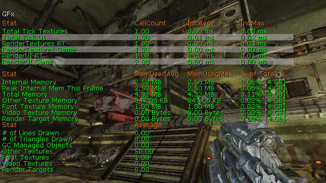
- Total Tick Textures - 更新Scaleform GFx 视频中的贴图。
- Total Tick UI - 更新Scaleform GFx视频。
- RenderTextures RT - 在渲染线程中更新并描画RenderTextures(渲染贴图)。
- RenderTextures Game - 更新并描画RenderTextures。
- RenderUI RT - 在渲染线程中更新并描画所有视频。
- RenderUI Game - 更新并描画所有视频。
- Internal Memory - Scaleformn内部所使用的内存量。
- Peak Internal Mem This Frame - 这帧所占用的内存的最大量。
- Total Memory - Scaleform占用的总内存量。
- Other Texture Memory - 正常贴图所占用的内存量。
- Font Texture Memory - 字体贴图所占用的内存量。
- Video Texture Memory - 视频贴图所占用的内存量。
- Render Target Memory - RenderTarget(渲染目标)贴图所占用的内存量。
- # Of Lines Drawn - Scaleform这帧所描画的全部直线。
- # of Triangles Drawn - Scaleform这帧所描画的全部三角形。
- GC Managed Objects - Scaleform GFx管理的位置类型的全部对象。
- Other Textures - 所有视频所使用的全部正常贴图。
- Font Textures - 所有视频所使用的全部字体贴图。
- Video Textures - 所有视频使用的全部视频贴图。
- Render Targets - 所有视频使用的全部RenderTarget(渲染目标)贴图。
STAT INITVIEWS
STAT INITVIEWS 命令显示关于可见性剔除所花费的时间长度及效率的信息。
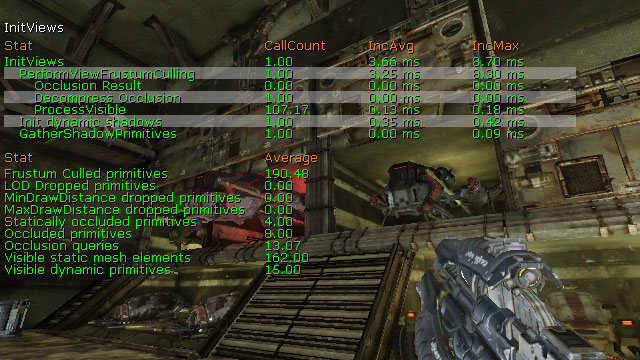
- InitViews - 执行所有的可见性剔除。
- PerformViewFrustumCulling - 基于视椎执行可见性剔除。
- Occlusion Result - 执行硬件遮挡查询。
- Decompress Occlusion - 解压存储的预计算可见性数据。
- ProcessVisible - 决定图元是否可见。
- Init Dynamic Shadows - 初始化动态阴影。
- GatherShadowPrimitives - 收集描画预计算阴影.所使用的图元.
- Frustum Culled Primitives - 视椎计算所提出的全部图元。
- LOD Dropped Primitives - 基于LODs剔除的所有图元。
- MinDrawDistance Dropped Primitives - 基于以下两种方式之一剔除的全部图元: 图元比它的MassiveLOD描画距离仅并且具有子项；或者图远距离视图原点的距离远于最小描画距离。
- MaxDrawDistance Dropped Primitives - 根据图元距离视图原点距离远于最大描画距离所提出的全部图元。
- Statically Occluded Primitives - 基于预计算可见性提出的全部图元。
- Occluded Primitives - 有任何方法提出的全部图元。
- Occlusion Queries - 执行的全部遮挡查询。
- Visible Static Mesh Elements - 可见的静态网格物体总数。
- Visible Dynamic Primitives - 可见的动态图元总数。
STAT INSTANCING
STAT INSTANCING 命令显示实例化的静态网格物体的信息。
- Loaded Instances - 所加载的全部实例化的静态网格物体。
- Attached Instances - 附加到ParentToWorld变换、拥有者和场景组件上的全部实例化的静态网格物体。
STAT MEMORY
STAT MEMORY 命令显示了关于不同系统所使用的内存信息。

- TrimMemory Cycles -
- Physical Memory Used - 物理分配的总内存大小。
- Virtual Mmemory Used - 虚拟内存分配的总内存大小。
- Streaming Memory Used - 贴图动态载入所占用的总内存的大小。
- Audio Memory Used - 音频系统所占用的总内存量。
- Texture Memory Used - 所有贴图包括mip-maps所占用的总内存量。
- Lightmap Memory (Texture) - 静态光照贴图所占用的总内存量。
- Shadowmap Memory (Texture) - 静态阴影贴图所占用的总内存量。
- Lightmap Memory (Vertex) - 顶点光照所占用的总内存量。
- Novodex Allocation Size - PhysX所占用的总内存量。
- Animation Memory - 骨架动画所占用的总内存量
- Streaming Memory Used - 预计算可见性所占用的总内存量。
- Precomputed Light Volume Memory - 预计算光照体积所占用的总内存量。
- Dominant Shadow Transition Memory - 动态光照所占用的总内存量。
- StaticMesh Total Memory - 静态网格物体资源所占用的总内存量。
- FracturedMesh Index Memory - 破裂的静态网格物体资源所占用的总内存量。
- SkeletalMesh Vertex Memory - 骨架网格物体资源顶点所占用的总内存量。
- SkeletalMesh Index Memory - 骨架网格物体LODs所占用的总内存量。
- SkeletalMesh M.BlurSkinnig Memory - 运动模糊植皮所占用的总内存量。
- Decal Vertex Memory - decal顶点所占用的总内存量。
- Decal Index Memory - decal(贴花)索引资源所占用的总内存量。
- Decal Interaction Memory - decal(贴花)交互所占用的总内存量。
- VertexShader Memory - 顶点着色器所占用的总内存量。
- PixelShader Memory - 像素着色器所占用的总内存量。
- FaceFX Peak Mem - FaceFX所占用的最大存量。
- FaceFX Cur Mem - FaceFX所占用的当前内存量。
- Proxy Total - 所有图元场景代理所占用的内存量。
- Proxy FParticleSystemSceneProxy - 所有物理系统场景代理所占用的内存量。
- Proxy KSkeletalMeshSceneProxy - 所有骨架网格物体场景代理所占用的内存量。
- Proxy FStaticMeshSceneProxy - 所有静态网格物体场景代理所占用的内存量。
- Proxy FLensFlareSceneProxy - 所有镜头眩光场景代理所占用的内存量。
- Proxy FDecalSceneProxy - 所有decal 场景代理所占用的总内存量。
- Proxy Other - 所有其他场景代理所占用的总内存量。
STAT MEMORYCHURN
STAT MEMORYCHURN 命令显示了内存分配的相关信息。

- Malloc Calls - 全部的内存分配函数调用。
- Realloc Calls - 所有的内存重新分配函数调用。
- Free Calls - 所有的内存释放函数调用。
- PhysicalAlloc Calls - 所有用于分配物理内存的函数调用。
- PhysicalFree Calls - 所有释放物理内存的函数调用。
- Total Allocator Calls - 所有的内存分配器函数调用，包括分配、重新分配及释放内存。
STAT MEMORYSTATICMESH
STAT MEMORYSTATICMESH 命令显示了静态网格物体资源所使用的内存。
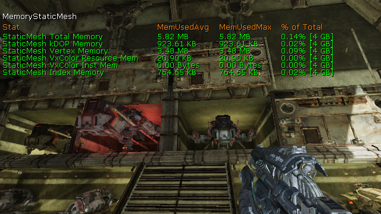
- StaticMesh Total Memory - 静态网格物体资源所占用的总内存量。
- StaticMesh kDOP Memory - 存储静态网格物体碰撞所占用的总内存。
- StaticMesh Vertex Memory - 静态网格物体顶点缓冲所占用的总内存。
- StaticMesh VxColor Resource Mem - 静态网格物体顶点颜色缓冲所占用的总内存量。
- StaticMesh VxColor Inst Mem - 所有静态网格物体的顶点颜色占用的总内存量。
- StaticMesh Index Memory - 静态网格物体索引缓冲占用的总内存量。
STAT MESHPARTICLES
STAT MESHPARTICLES 显示针对包含使用了网格物体型模块的发射器的粒子系统的统计数据。
- Mesh Update Time - 每帧更新网格物体粒子。
- Mesh Spawn Time - 产生新的网格物体粒子。
STAT MORPH
STAT MORPH 命令显示了关于世界中骨架网格物体上播放的顶点变形目标的统计数据。

- Morph Vertex Buffer Apply Delta - 迭代所有激活的顶点变形目标并累积它们的顶点delta（间隔）。
- Morph Vertex Buffer Init - 清除所有顶点delta（间隔）。
- Morph Vertex Buffer Update - 通过积累激活的顶点变形目标集合的所有delta位置和delta法线来更新顶点变形目标顶点缓冲的内容。
STAT NAVMESH
STAT NAVMESH 命令显示了关于使用导航网格物体系统进行寻路的相关信息。

- Obstacle Point Check - 针对障碍网格物体进行点碰撞检测。
- Generate Path - 执行 A* 搜索来生成路径。
- Evaluate Goal - 决定作为沿着路径上的下一个目标的多边形。
- Compute Edges - 地带边缘来查找路径。
- Apply Constraints - 循环约束列表中的所有约束，并让它们继续说出正在考虑的边缘的当前性能消耗。
- Determine Goal - 决定用作为最终目标的多边形。
- Save Path - 保存最终得到的路径。
- Edge Iterations - 在寻路时迭代边缘的总次数。
STAT NET
STAT NET 命令列出了客户端服务器链接的网络流量相关的信息，包括 发送/接收 的字节数、流入/流出 的包数、及包丢失率等。

- Ping - 网络数据往返传送所用的时间。
- Channels -客户端和服务器连接的总数量。
- In Rate (bytes) - 这次更新接收的全部字节。
- Out Rate (bytes) - 这次更新发送的全部字节。
- In Packets - 这次更新接收的所有包。
- Out Packets - 这次更新发送的所有包。
- In Bunches - 这次更新接受的所有批次。
- Out Bunches - 这次更新发送的所有批次。
- In Loss - 这次更新丢失的全部传入包。
- Out Loss - 这次更新丢失的全部传出包。
- Voice Bytes Sent - 这次更新中发送的语音通信的全部字节。
- Voice Bytes Recv - 这次更新中接收的语音通信的全部字节。
- Voice Packets Sent -这次更新中发送的语音通信的全部包。
- Voice Packets Recv - 这次更新中接收的语音通信的全部包。
- In % Voice - 接受的语音通信的字节数占全部字节的百分比。
- Out % Voice - 发送的语音通信的字节数占全部字节的百分比。
STAT OBJECT
STAT OBJECT 命令显示了关于对象创建和销毁相关的信息。
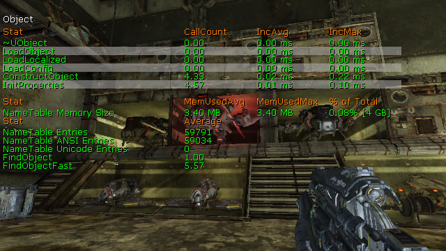
- ~UObject - 销毁对象。
- LoadObject - 通过StaticLoadObject()查找或加载对象。
- LoadLocalixed - 导入本地化的属性值。
- LoadConfig - 导入配置属性值。
- ConstructObject - 通过StaticConstructObject()创建新的对象实例。
- InitProperties - 将对象属性初始化为默认值。
- NameTable Memory Size - 名称表格所占用的内存总量。
- NameTable Entries - 名称表格中的全部名称。
- NameTable ANSI Entries - 名称表格中的全部ansi名称。
- NameTable Unicode Entries - 名称表格中的全部unicode 名称。
- FindObject - 通过StaticFindObject()查找对象引用。
- FindObjectFast - 通过StaticFindObjectFast()查找对象引用。
STAT OCTREE
STAT OCTREE 命令显示了关于八叉树中对象处理相关的统计数据。
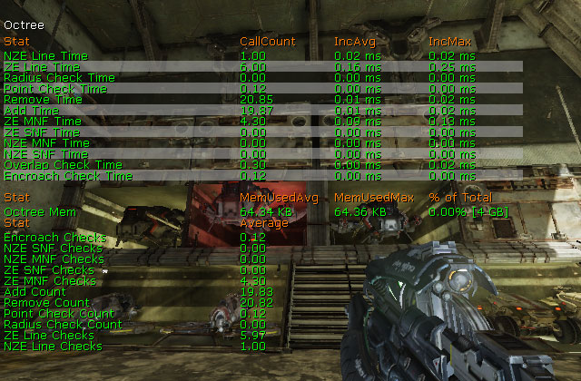
- NZE Line Time - 执行Actor非零粗细线性检测。
- ZE Line Time - 执行Actor零粗细线性检测。
- Radius Check Time - 执行Actor径向检测。
- Point Check Time -执行Actor点碰撞检测。
- Remove Time - 从八叉树中删除图元。
- Add Time - 向八叉树中添加图元。
- ZE MNF Time - 执行零粗细多节点过滤。
- ZE SNF Time - 执行零粗细单节点过滤。
- NZE MNF Time - 执行非零粗细多节点过滤。
- NZE SNF Time - 执行非零粗细单节点过滤。
- Overlap Check Time - 执行Actor重叠检测。
- Encroach CHeck Time - 执行Actor侵占检测。
- Octree Mem - 八叉树所占用的内存量。
- Encroach Checks - 所执行的全部Actor侵占检测。
- NZE SNF Checks - 所执行的全部非零粗细单节点过滤检测。
- NZE MNF CHecks - 所执行的全部非零粗细多节点过滤检测。
- ZE SNF Checks - 所执行的全部零粗细单节点过滤检测。
- ZE MNF CHecks - 所执行的全部零粗细多节点过滤检测。
- Add Count - 添加到八叉树中的全部图元。
- Remove Count - 从八叉树中删除的全部图元。
- Point Check Count - 所执行的全部Actor点碰撞检测。
- Radius Check Count - 所执行的全部Actor径向检测。
- ZE Line CHecks - 所执行的全部Actor零出席线性检测。
- NZE Line CHecks - 所执行的全部Actor非零粗细线性检测。
STAT PARTICLEMEM
STAT PARTICLEMEM 命令显示了关于粒子系统所使用的内存信息。
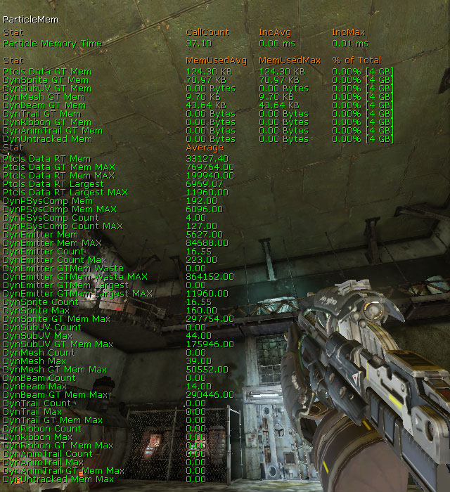
- Particle Memory Time - 为例子分配内存。
- Ptcls Data GT Mem - 游戏线程中的所有例子所使用的内存总量。
- DynSprite GT Mem - 游戏线程中的平面粒子所占用的内存总量。
- DynSubUV GT Mem - 游戏线程中的SubUV 粒子所占用的内存总量。
- DynMesh GT Mem -游戏线程中的网格物体粒子所占用的内存总量。
- DynBeam GT Mem - 游戏线程中的光束粒子所占用的内存总量。
- DynTrail GT Mem - 游戏线程中的尾迹粒子所占用的内存总量。
- DynRibbon GT Mem - 游戏线程中的条带粒子所占用的内存总量。
- DynAnimTrail GT Mem - 游戏线程中的动画尾迹粒子所占用的内存总量。
- DynUntracked Mem - 游戏线程中的其他粒子所占用的内存总量。
- Ptcls Data RT Mem - 传递给渲染线程供粒子使用的总内存量。
- Ptcls Data GT Mem Max - 游戏线程中所有粒子所占用的最大内存量。
- Ptcls Data RT Mem Max - 传递给渲染线程供粒子使用的最大内存量。
- Ptcls Data RT Largest -
- Ptcls Data RT Largest Max -
- DynPSysComp Mem - 这帧中ParticleSystemComponents渲染粒子所占用的内存总量。
- DynPSysComp Mem Max - 这帧中ParticleSystemComponents渲染粒子所占用的最大内存量。
- DynPSysComp Count - 世界中当前存在的全部ParticleSystemComponents 。
- DynPSysComp Count Max - 任何时候世界中的ParticleSystemComponents 的最大数量。
- DynEmitter Mem - 世界中所有的发射器占用的内存总量。
- DynEmitter Mem Max - 世界中所有的发射器占用的最大内存量。
- DynEmitter Count - 世界中当前存在的全部发射器。
- DynEmitter Count Max - 任何时候世界中发射器的最大数量。
- DynEmitter GTMem Waste - 游戏线程中浪费的总内存。
- DynEmitter GTMem Waste Max - 游戏线程中浪费的最大内存量。
- DynEmitter GTMem Largest -
- DynEmitter GTMem Largest Max -
- DynSprite Count - 世界中的全部平面粒子发射器数量。
- DynSprite Max - 任何时候世界中可以具有的平面粒子发射器的最大数量。
- DynSprite GT Mem Max - 游戏线程中平面粒子发射器所占用的最大内存量。
- DynSubUV Count - 世界中的全部SubUV 发射器数量。
- DynSubUV Max - 任何时候世界中可以具有的SubUV 发射器的最大数量。
- DynSubUV GT Mem Max - 游戏线程中SubUV 发射器所占用的最大内存量。
- DynMesh Count - 世界中的全部网格物体发射器数量。
- DynMesh Max - 任何时候世界中可以具有的网格物体发射器的最大数量。
- DynMesh GT Mem Max - 游戏线程中网格物体粒子所占用的最大内存量。
- DynBeam Count - 世界中的全部光束发射器数量。
- DynBeam Max - 任何时候世界中可以具有的光束发射器的最大数量。
- DynBeam GT Mem Max - 游戏线程中光束粒子所占用的最大内存量。
- DynTrail Count - 世界中的全部尾迹发射器数量。
- DynTrail Max - 任何时候世界中可以具有的尾迹发射器的最大数量。
- DynTrail GT Mem Max - 游戏线程中尾迹粒子占用的最大内存量。
- DynRibbon Count - 世界中的全部条带发射器数量。
- DynRibbon Max - 任何时候世界中可以具有的条带发射器的最大数量。
- DynRibbon GT Mem Max - 游戏线程中条带粒子所占用的最大内存量。
- DynAnimTrail Count - 世界中的全部动画尾迹发射器数量。
- DynAnimTrail Max - 任何时候世界中可以具有的动画尾迹发射器的最大数量。
- DynAnimTrail GT Mem Max - 游戏线程中动画尾迹粒子占用的最大内存量。
- DynUntracked Mem Max - 游戏线程中的其他粒子所占用的最大内存量。
STAT PARTICLES
STAT PARTICLES 显示关于世界中所有粒子系统的统计数据。
注意: 平面粒子也包括'subuv(子UV)'粒子。
- AnimTrail Notify Time - 更新检测AnimNotify_Trails.
- Trail Tick Time - 更新尾迹发射器。 Trail Render Time - 渲染尾迹发射器(渲染器线程而不是GPU)。
- Particle Collision Time - 判断/处理 粒子碰撞。
- Mesh Tick Time - 更新网格物体发射器。
- Mesh Render Time -渲染网格物体发射器。
- UpdateInstances Time - 更新发射器实例。
- Activate Time - 激活粒子系统。
- Initialize Time - 初始化粒子系统。
- SetTemplate Time - 为所有粒子系统执行SetTemplate函数调用。
- Particle Packing Time - 当该渲染时填充粒子数据。
- Particle Render Time - 渲染粒子系统(r渲染线程而不是GPU)。
- Particle Tick Time - 更新粒子发射器。
- PSys Comp Tick Time - 更新监测粒子系统组件。
- Sprite Update Time - 更新平面粒子发射器。
- Sprite Spawn Time - 生成平面粒子发射器的粒子。
- Sprite Tick Time - 更新监测平面粒子发射器。
- Sprite Render Time - 渲染平面粒子发射器(渲染线程而不是GPU)。
- Sort Time - 排序粒子。
- Beam Tick Time - 更新光束发射器。
- Beam Render Time - 渲染光束发射器(渲染线程而不是GPU)。
- Beam Spawn Time - 生成光束发射器的粒子。
- Particle Pool Time - 执行EmitterPool函数。
- Beam Particles - 激活的光束粒子的总数量。
- Beam Ptcls Spawned - 生成的光束粒子的总数量。
- Beam Ptcls Killed - 销毁的光束粒子的总数量。
- Beam Ptcls Tris - 渲染光束发射器所使用的三角形的总数量。
- Sprite Particles - 激活的平面粒子的总数量。
- Sprite Ptcls Spawned - 生成的平面粒子的总数量。
- Sprite Ptcls Updated - 更新的平面粒子的总数量
- Sprite Ptcls Killed - 销毁的平面粒子的总数量。
- Mesh Particles - 激活的网格物体发射器粒子的总数量。
- Trail Particles - 激活的尾迹粒子的总数量。
- Trail Ptcls Spawned - 生成的尾迹粒子的总数量。
- Trail Ptcls Killed - 销毁的尾迹粒子的总数量。
- Trail Ptcls Tris - 渲染尾迹所使用的三角形的总数量。
STAT PATHFINDING
STAT PATHFINDING 命令显示针对各种寻路函数的统计数据。

- BestPathTo - 按照NodeEval函数中所定义的方法，在导航节点网络中查找最佳(或满意的)目的地。在BestPathTo() 函数中所花费的时间。
- FindPathToward - 查找到一个指定Actor的路径。在FindPathToward() 函数中所花费的时间。
- Various Reachable - 判断是否可以通过各种Reachable()函数到达目标。
STAT PEER
STAT PEER 命令列出了客户端到客户端链接的网络流量相关的信息，包括 发送/接收 的字节数、流入/流出 的包数、及包丢失率等。
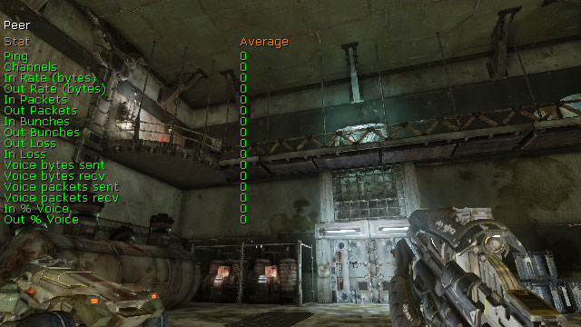
- Ping - 网络数据往返传送所用的时间。
- Channels -客户端和服务器连接的总数量。
- In Rate (bytes) - 这次更新接收的全部字节。
- Out Rate (bytes) - 这次更新发送的全部字节。
- In Packets - 这次更新接收的所有包。
- Out Packets - 这次更新发送的所有包。
- In Bunches - 这次更新接受的所有批次。
- Out Bunches - 这次更新发送的所有批次。
- In Loss - 这次更新丢失的全部传入包。
- Out Loss - 这次更新丢失的全部传出包。
- Voice Bytes Sent - 这次更新中发送的语音通信的全部字节。
- Voice Bytes Recv - 这次更新中接收的语音通信的全部字节。
- Voice Packets Sent -这次更新中发送的语音通信的全部包。
- Voice Packets Recv - 这次更新中接收的语音通信的全部包。
- In % Voice - 接受的语音通信的字节数占全部字节的百分比。
- Out % Voice - 发送的语音通信的字节数占全部字节的百分比。
STAT PHYSICS
STAT PHYSICS 命令显示了关于PhysX物理引擎的统计数据。
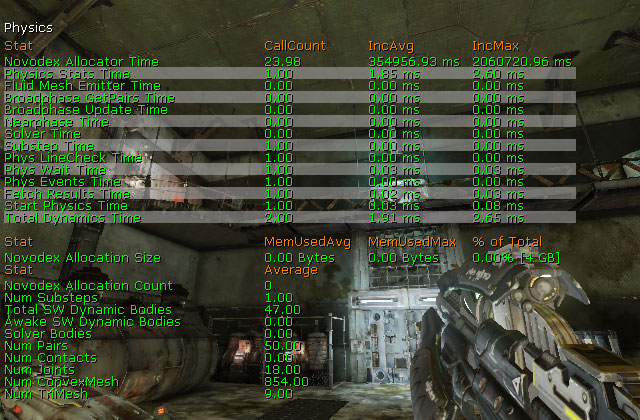
- Novodex Allocator Time - 为PhysX分配内存。
- Physics Stats Time - 捕获针对粒子系统的统计数据。
- Fluid Mesh Emitter Time -
- Broadpahse GetPairs Time -
- Broadphase Update Time -
- Nearphase Time -
- Solver Time -
- Substep Time - 平均子步事件。
- Phys LineCheck Time -
- Phys Wait Time -
- Phys Events Time -
- Fetch Results -
- Start Physics Time -
- Total Dynamics Time -
- Novodex Allocation Size - 分配给PhysX的总内存量。
- Novodex Allocation Count - 为PhysX分配的全部内存。
- Num Substeps - 时间步长被分割为的子步的数量。
- Total SW Dynamic Bodies - 场景中存在的针对当前仿真步长的动态actors的数量。
- Awake SW Dynamic Bodies - 不是休眠组一部分（孤岛）的动态actor的数量。
- Solver Bodies - 当前步长中存在的solver bodies（解决者刚体）的数量(也就是要约束的光体主体的数量)。在2.6中不支持该项。
- Num Pairs - 场景中存在的针对当前仿真步长的图形对的数量。
- Num Contacts - 场景中存在的针对当前仿真步长的contact(接触)的数量。在2.6中不支持该项。
- Num Joints - 场景中关节的数量。注意这个数量也包含场景中的所有“dead joints（无用关节）”(请参照NxScene.releaseActor)。
- Num ConvexMesh - 场景中的PhysX凸面网格物体的总数量。
- num TriMesh - 场景中的PhysX三角形网格物体的总数量。
STAT PHYSICSCLOTH
STAT PHYSICSCLOTH 命令显示了关于PhysX布料仿真的信息。
- Total Cloths - 全部布料仿真。
- Active Cloths - 激活的布料仿真。
- Active Cloth Vertices - 激活的布料仿真中的所仿真的顶点的数量。
- Total Cloth Vertices - 所有布料仿真中的全部布料顶点。
- Active Attached Cloth Vertices - 激活的布料仿真中的附加顶点的数量。
- Total Attached Cloth Vertices - 所有布料仿真中的全部附加顶点。
STAT PHYSICSFIELDS
STAT PHYSICSFIELDS 命令显示了关于PhysX 力场的信息。
- CylindricalForceFieldTick - 更新圆柱体力场。
- RadialForceFieldTick - 更新放射形力场。
STAT PHYSICSFLUID
STAT PHYSICSFLUID 命令显示了关于PhysX 流体发射器的信息。
- PhysXEmitterVertical Tick Time -
- PhysXEmitterVertical Sync Time -
- Total Fluids - 全部的physX流体仿真。
- Total Fluid Emitters - 全部的PhysX流体发射器。
- Active Fluid Particles - 激活的仿真中的流体粒子的数量。
- Total Fluid Particles - 全部的流体粒子。
- Total Fluid Packets - 全部的流体包。
STAT SCENERENDERING
STAT SCENERENDERING 命令显示渲染相关的统计数据。

- Total GPU Rendering - GPU上渲染花费的总时间。
- RenderViewFamily - 整个场景的渲染时间。
- InitViews - 决定可见性及InitViews所做的其它所有工作所花费的渲染线程时间。 这通常在总渲染时间的30-50%。
- Occlusion Result - 等待遮挡检测结果所花费的渲染线程时间。 遮挡检测是latent(意味着在这帧中获取的遮挡将会在上一帧处理) ，所以这个时间是较小的。 如果这里消耗了大量的时间，通常是由于GPU限制。 这是'InitViews time'的子集。
- Dynamic Shadow Setup - 设置动态阴影所花费的渲染线程时间。 这是'InitViews time'的子集。
- Depth Drawing - 仅渲染深度那遍所花费的渲染线程时间。
- Base Pass Drawing - 基本渲染那遍所花费的渲染线程时间。 这通常占总渲染线程时间的30-50%。
- StaticDrawList Drawing - 渲染给定DPG和视图的基本数据的基本渲染那遍。
- Dynamic Primitive Drawing - 使用基本渲染描画策略描画动态的非遮挡的图元。
- SoftMasked Drawing - 将软体蒙板对象渲染为alpha透明状态，按照从后向前排序。
- Proj Shadow Drawing - 在场景中渲染投射的影子。
- Lighting Drawing - 渲染场景中的所有光源。
- Unlit Decal Drawing - 渲染场景中的不带光照的decals。
- BeginOcclusionTests - 处理遮挡检测所花费的渲染线程时间。
- Translucency Drawing - 渲染半透明物体是所花费的渲染线程时间。
- Velocity Drawing - 速度渲染上所花费的描画线程时间。
- Post Process Rendering - 渲染视图的后期处理特效。
- Scene Capture Rendering - 渲染场景截图所花费的渲染线程时间。
- SC InitViews - 初始化场景视图。
- SC Base Pass - 进行场景的基本渲染。
- Unaccounted - 渲染所花费的其他时间。
- Lights - 场景中的全部光源。
STAT SCENEUPDATE
STAT SCENEUPDATE= 命令显示了关于更新世界的信息。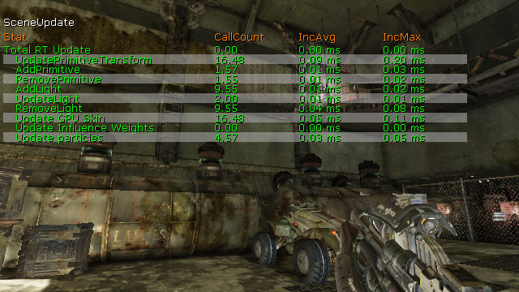
- Total RT Update - 更新渲染器线程。
- UpdatePrimitiveTransform - 更新场景的图元变换。
- AddPrimitive - 添加图元到场景中。
- RemovePrimitive - 从场景中删除图元。
- AddLight - 添加光源到场景中。
- UpdateLight - 更新场景中的光源。
- RemoveLight - 从场景中删除光源。
- Update GPU Skin - 更新骨架网格物体植皮数据。
- Update Influence Weights - 在渲染线程中更新影响权重。
- Update Particles - 在渲染线程中更新粒子数据。
STAT SHADERCOMPILING
STAT SHADERCOMPILING 命令显示了来自着色器编译器的细节。
Note: 所有的计时器都是以秒为单位，当启动后开始计时。
- Total Material Shader Compiling Time - 编译所有材质着色器。
- Total Global Shader Compiling Time - 编译全局着色器。
- RHI Compile Time - 针对特定平台的编译器。
- CRCing Shader Files - 为着色器文件计算CRC。 某些'Loading Shader Files'时间也包括在这里面。
- Loading Shader Files - 从硬盘加载着色器文件。
- HLSL Translation - 将着色器表达式转换为HLSL。
- Num Total Material Shaders - 所编译的全部材质着色器。
- Num Special Material Shaders - 所编译的全部的特殊引擎着色器。
- Num Terrain Material Shaders - 所编译的和地形结合使用的所有着色器。
- Decal Material Shaders - 编译的和decals结合使用的所有着色器。
- Num Particle Material Shaders - 编译的和粒子系统结合使用的所有着色器。
- Num Skinned Material Shaders - 编译的和骨架网格物体结合使用的所有着色器。
- Num Lit Material Shaders - 使用MLM_Lit (Phong)光照模型的所有着色器。
- Num Unlit Material Shaders - 使用MLM_Unlit光照模型的所有着色器。
- Num Transparent Material Shaders - 使用半透明模式、调制模式或累加混合模式的着色器。
- Num Opaque Material Shaders - 使用半透明混合模式的全部着色器。
- Num Masked Material Shaders - 使用蒙板、softmasked(软蒙板)、或抖动半透明混合模式的全部着色器。
STAT SHADERCOMPRESSION
STAT SHADERCOMPRESSION 命令显示了关于压缩的着色器的应用的相关信息。

- Frame RT Shader Init Time - 这帧中初始化着色器。
- Uncompressed Shader Memory - 未压缩的着色器所占用的内存量。
- Compressed Shader Memory - 压缩的着色器所占用的内存量。
- RT Shader Load Time - 加载着色器花费的总时间。
- Total RT Shader Init Time - 初始化着色器花费的总时间。
- Num Shaders Loaded - 加载的全部着色器。
- Num Shaders Used - 用于渲染的全部着色器。
STAT SHADOWRENDERING
STAT SHADOWRENDERING 命令显示了针对渲染动态阴影的统计数据。

- Render Dynamic Shadows - 渲染动态阴影。
- Normal Shadows - 渲染正常的动态阴影。
- Modulated Shadows - 渲染调制的动态阴影。
- WholeScene Shadow Depths - 渲染整个场景的动态阴影深度。
- WholeScene Shadow Projectors - 渲染这个场景的动态阴影投射。
- PerObject Shadow Depths - 渲染基于每个对象的动态阴影深度。
- PerObject Shadow Projectors - 渲染基于每个对象的动态阴影投射。
- Per Object Shadows - 渲染的所有基于每个对象的动态阴影。
- Cached PreShadows - 渲染的所有缓冲预计算阴影。
- Translucent PreShadows - 渲染的所有半透明预计算阴影。
- PreShadows - 渲染的所有预计算阴影。
- Whole Scene Shadows - 渲染的所有针对整个场景的阴影。
- Shadowing Dominant Lights On Screen - 视图中所有影响对象的投射阴影的动态光源。
STAT STATSYSTEM
STAT STATSYSTEM 命令显示了关于统计数据收集系统的细节。

- DrawStats - 捕获并描画所有启用的统计数据组。
- PerFrameCapture (RT) - 在渲染线程中每帧捕获统计数据。
- PerFramCapture - 每帧捕获统计数据。
- Timing Code Calls - 到appSeconds()和appCycles()的所有函数调用。
STAT STREAMING
STAT STREAMING 命令显示了关于世界中贴图动态载入的基本统计数据。

- Game Thread Update Time - 游戏线程计算要动态载入哪些miplevels并处理请求所需要的时间。
- Pool Memory Used - 所占用的贴图池内存量。
- Textures In Memory, Target - 贴图所使用的最优内存量。
- Textures In Memory, Current - 贴图所使用的当前内存量。
- Texture On Disk - 贴图占用的磁盘空间总量。
- Over Budget - 当前使用的内存超出了最优内存使用量。
- Under Budget - 当前使用内存量低于最优内存使用量。
- Streaming Textures - 可动态载入的贴图的数量。这里排除了那些标记为NeverStream的贴图、具有太少的miplevels以至于不能进行动态载入的贴图、或者那些不是从永久性文档序列化出的贴图。
STAT STREAMINGDETAILS
STAT STREAMINGDETAILS 命令显示了关于世界中贴图动态载入和关卡动态载入的详细统计数据。

- UpdateLevelStreaming Time - 为世界更新关卡动态载入。
- RemoveFromWorld Time - 从世界中分离关卡。
- AddToWorld Time - 将新的关卡和世界相结合。
- Volume Streaming Tick - 处理来自LevelStreamingVolumes的 加载/卸载 请求。
- Rendering Thread Finalize Time - 最终确定渲染线程中的mip改变。
- Rendering Thread Update Time - 在渲染线程中更新mips。
- Async Loading Time - 异步加载数据。
- Under Budget -
- Static Textures In Memory - 内存中目前使用StaticTexture （静态贴图）启发式方法的总字节数。
- Dynamic Textures In Memory - 内存中目前使用DynamicTexture(动态贴图)启发式方法的总字节数。
- LastRenderTime Texture In Memory -内存中目前使用LastRenderTime 启发式方法的总字节数。
- Forced Textures In Memory - 内存中目前使用ForcedIntoMemory 启发式方法的总字节数。
- Lightmaps In Memory - 内存中所有动态载入光照贴图的总字节数。
- Lightmaps On Disk - 磁盘上所有动态载入光照贴图的总字节数。
- Intermediate Textures Size - 所有正在运行的中间贴图的大小。
- Textures Streamed In, Frame - 这帧中载入的总字节数。
- Textures Streamed In, Total - 到目前为止载入的总字节数。
- Lightmaps Streamed In, Total - 到目前为止动态载入的光照贴图的总字节数。
- Streaming Latency, Average (sec) - 环形缓冲区域中的所有延迟样本的平均值，以秒为单位。
- Streaming Bandwidth, Average (sec) - 环形缓冲区域中的所有带宽样本的平均值。
- Intermediate Textures - 正在运行的中间贴图的数量。
- Requests In Cancelation Phase - 取消阶段中请求的数量。
- Requests In Update Phase - 更新阶段中请求的数量。
- Requests In Finalize Phase - 最终完成阶段中请求的数量。
- Growing Reallocations - 导致mip数量增加的全部重分配操作。
- Shrinking Reallocations - 导致mip数量减少的全部重分配操作。
- Full Reallocations -
- Failed Reallocations -
- Panic Defragmentations -
- Num Texture Instances - 动态载入贴图实例的数量 (包括光照贴图)。
- Num Lightmap Instances - 动态载入光照贴图实例的数量。
- Streaming Volumes - 用于管理关卡动态载入所使用的全部LevelStreamingVolumes 。
STAT TEXTUREPOOL
STAT TEXTUREPOOL 命令显示了关于贴图池和贴图应用的信息。

- Blocked By GPU Relocation - 自从上一次调用Tick()开始由于平台防护所耽搁的时间量。
- Defragmentation - 上一次调用 Tick()所花费的时间。
- Allocated - 分配给贴图池的内存量，以字节为单位。
- Free - 贴图池可用的内存量，以字节为单位。
- Largest Hole - 在执行任何内存重新分配之前最大的空闲的连续内存区域的尺寸。
- Relocating Memory - 总共重新分配的字节数。
- Num Relocations - 所发动的内存重新分配的次数。
- Num Holes - 在执行任何内存重新分配之前，脱节的空闲内存区域的数量。
- Total Async Reallocs - 到目前为止成功完成的异步内存重新分配的总数量。
- Total Async Allocs - 到目前为止完成的异步内存分配的总数量。
- Total Async Cancels - 到目前为止取消的异步请求的总数量。
STAT THREADING
STAT THREADING 命令显示关于游戏线程和渲染线程的统计数据。
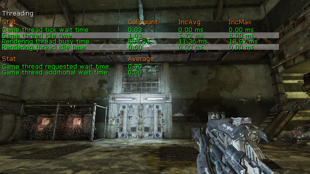
- Game Thread Tick Wait Time - 游戏线程更新中等待的时间。
- Game Thread Idle Time - 游戏线程中的空闲时间。
- Rendering Thread Busy Time - 渲染线程中的忙碌时间。
- Rendering Thread Idle Time - 渲染线程的空闲时间。
- Game Thread Requested Wait Time - 游戏线程在下一次更新之前需要等待的时间。
- Game Thread Additional Wait Time - 除了请求的时间之外游戏线程需要等待的额外时间。
STAT TRAILPARTICLES
STAT TRAILPARTICLES 显示针对包含使用了尾迹类型模块的发射器的粒子系统的统计数据。
- Trail FillIndex Time - 填充尾迹发射器索引数据所消耗的时间。
- Trail FillVertex Time - 填充尾迹发射器索引数据所消耗的时间。
- Trail Spawn Time - 生成尾迹粒子所消耗的时间。
- Trail Ptcl Render Calls - 所渲染的尾迹发射器的数量。
- Trail Ptcls Updated - 更新的尾迹发射器的数量。
- Trail Tick Calls - 调用函数来更新尾迹发射器的次数。
统计数据选项
STAT 命令也可以和以下参数结合使用来修改关于显示什么数据和数据显示方式的设置：